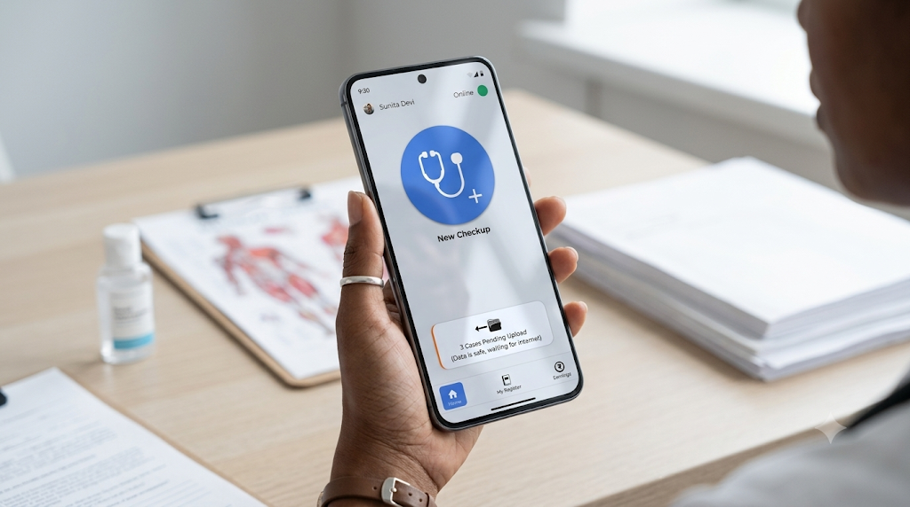
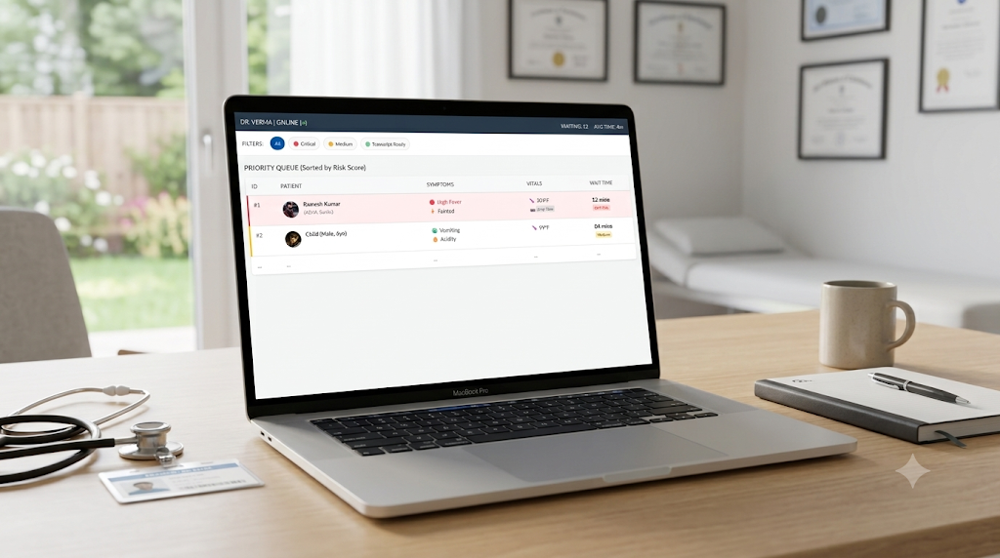
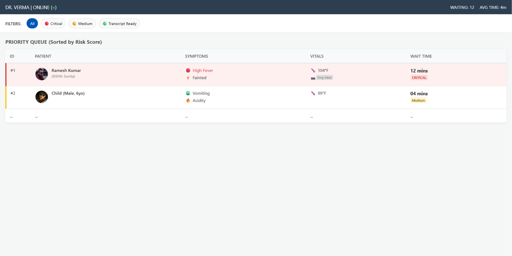

If people can't get to a doctor, the system already has someone at their door
A university project that started with field visits around Dehradun and ended with a triage tool for ASHA workers, the community health volunteers India already sends into every village and settlement.

- My role
- Field research with classmates · concept, triage logic and UI my own
- Context
- University module · Designing for social needs
- Evidence
- Site visits and street interviews in Dehradun · secondary research · no testing with ASHAs
The brief was to pick a social need. I picked healthcare, and assumed the story would be about bad government hospitals. My own experience of them had never been good, so I went to test that.
What we found on the street was more uncomfortable. For many low-income families, the free option wasn't the cheap one, and the most common treatment was waiting for the illness to pass. That moved the question from “how do we fix the hospital?” to “how does care reach someone who won't go?”


In India, getting sick is one of the fastest ways to become poor
A low-income patient has two options, and both cost something. Government care costs time and dignity. Private care costs money. Most decisions about health get made somewhere in that tug of war.
We went to three places, and were turned away from the first
The plan was to see a government Community Health Centre, talk to the people who rely on it, then compare a private hospital. The CHC didn't give us permission to interview staff, so we observed from the public areas instead.
“{{ q.hi }}” {{ q.en }} — {{ q.who }}
If ₹300 is too much to visit her own daughter, it's hard to imagine her spending it on a fever.
Free care stops being free once you count the day it takes
I mapped where the settlements we visited sit against the nearest care. The government centres were a bus ride away. Small private clinics, the single-room kind often run by an unqualified practitioner, were a short walk.


Tier 3 covers everything from a 20-bed nursing home to a single-room clinic run by an unregistered practitioner. Near Kulhan and Ajabpur Kalan, the clinics sit within walking distance of the settlements.
{{ costVerdict }}
Comparing our interview notes with published fee data, the nearby private clinic came out cheaper and faster than the government centre in a surprising number of cases. But the cheapest option of all was the one people kept describing: do nothing, and wait for it to go away. Every reason above points there.
India trains a lot of doctors. Few of them want these posts
India has over a lakh MBBS seats a year, one of the highest numbers in the world, and public facilities are still short-staffed. So I looked at why a young doctor might avoid a government posting.
We didn't need a new system. She's already there.
None of the research pointed at one problem until I flipped it. If people can't get to healthcare, healthcare has to get to them, and India already employs someone to do that: the ASHA, an Accredited Social Health Activist, a woman from the community paid per task to visit households.
Most of her digital work is data collection for government programmes, spread across several apps (the NCD app, the RCH portal and others). She carries a kit of basic medicines, but nothing tells her when it's safe to use them.
The same visit, but ending in a decision: treat this from the kit, or send it to a doctor with the evidence already attached. The medicine and the trust exist. What's missing is the authority to act on them.
How might we give an ASHA worker the confidence to treat what's minor, and the evidence to escalate what isn't?
A checkup she can finish without typing, or a signal
She already juggles enough government apps, so I designed this as an extension to one she has, eSanjeevani, rather than another icon on her home screen. It works offline and in local languages.
{{ r.d }}
The app's most important job is saying no
Letting a community volunteer hand out medicine is only safe if something stops her when it shouldn't. The app follows the government's standing orders for ASHAs and locks the kit the moment a danger sign appears.
{{ out.d }}
Thresholds here are placeholders for the demo. Real ones would come from the standing orders and a clinician, not from me.The doctor doesn't have to live in the village to clear its queue
Everything the ASHA records lands in a queue for a doctor, sorted by risk rather than arrival. The heavy lifting, transcribing her voice notes and scoring urgency, happens on the doctor's side, where the devices and the internet are better.

Fever, acidity and other minor cases are treated from the kit. The patient keeps the day's wage, and the hospital never sees the case.
Serious cases reach the hospital with a digital referral ticket, already reviewed by a doctor, so they skip the registration counter instead of starting from zero.
Government doctors are busiest between roughly 10 am and 2 pm. Because cases are stored and reviewed later rather than live, a private practitioner in the city could log in during their own quiet hours and clear rural cases for a subsidised per-case fee. It's closer to how ride-hailing adds drivers at peak times than to hiring, and it speaks directly to the “ghost village” problem: the doctor stays in the city, the patient still gets seen.
We met the patients. We never met an ASHA
The research is strongest on why people avoid care and weakest on the person the design is for. Here is what the concept rests on.